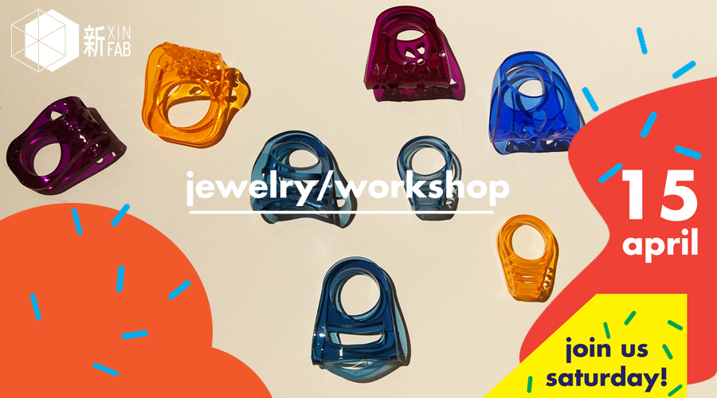
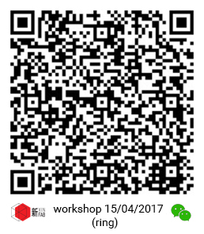

WORKSHOP
Create your own acrylic ring! | 创建自己的亚克力环！

When:Saturday, April 1, from 4h30pm to 7h30pm
Where: Xinfab - 665,Changhua Road, Jing'an District, Shanghai (DT Space)
Price: 220 RMB
Join jewerly designer Pamela for this workshop where you will create your very own acrylic ring!
Aside from taking home a ring you will make yourself, you will learn some basics of Adobe Illustrator, how to use Xinfab's Universal laser cutter, and how to bend acrylic. The combination of these skills open the doors of a world of possibilities and ideas that go way beyond jewerly design.
Things you should bring:
// Your laptop and charger
// Please install Adobe Illustrator (Trial version is OK)
// Your passion, curiosity, and questions
Price includes:
// Plexiglass (Acrylic glass) material for your ring


WORKSHOP SCHEDULE
// STEP 1: ILLUSTRATOR
_Introduction to Illustrator
_Create the basic shapes of your ring
// STEP 2: LASER CUTTER
_Introduction to laser cutting
_Learn how to use Xinfab's laser cutter
_Laser cut your ring
// STEP 3: BENDING ACRYLIC
_Learn how to bend acrylic
_Bend your ring and you're done!
///////////////////////////////////
HOW TO SIGN UP
LIMITED TO 6 PEOPLE
// Alipay
Transfer the workshop fee to: pay@xinfab.com
Scan the QR code below:

Questions? Send an email to info@xinfab.com.
///////////////////////////////////
ABOUT THE TEACHER

Pamela Martello is a Mexican jewerly designer who has been creating original and stylish designs in Shanghai for the past 4 years. Jewerly is Pamela's true love, but she is always experimenting in other fields related to design where she finds inspiration for her creations – digital fabrication is no exception. For Pamela, travelling, exploring, and living in different places offers a constant stream of stimulus for new ideas (plus a little fantasy too).
时间:：4月15日星期六，16:30 - 19:30
地点： 新Fab - 上海市静安区昌化路665号（DT空间）
价格： 220元
加入珠宝设计师Pamela在这个车间，您将创建自己的丙烯酸环！
除了带回家一个戒指，您将学习Adobe Illustrator的一些基本知识，如何使用Xinfab的通用激光切割机，以及如何弯曲亚克力。 这些技能的结合打开了可能性和想法世界超越的珠宝设计。
需要带上
// 笔记本电脑及其充电器
// 请先安装好Illustrator软件（试用版是OK的）
// 你的热情、好奇心和问题
价格包括
// 有机玻璃（丙烯酸玻璃）材料为您的戒指
///////////////////////////////////
工作坊流程
// 第1步： ILLUSTRATOR
_Illustrator简介
_创建你的戒指的基本形状
// 第2步： 激光切割机
_激光切割介绍
_了解如何使用Xinfab的激光切割机
_激光切割你的戒指
第3步： 弯曲的亚克力
_了解如何弯曲丙亚克力
_弯曲你的戒指，你完成了！
///////////////////////////////////
如何注册
有限6人
// 支付宝
将车间费转移到： pay@xinfab.com
// 微信
扫描上面的QR码
有问题? 发送电子邮件到 info@xinfab.com.
///////////////////////////////////
关于教师
Pamela Martello是墨西哥珠宝设计师，过去四年来一直在上海创造原创时尚的外观设计。 珠宝是Pamela的真正爱，但她一直在尝试与其他设计相关的领域，她受到创作的启发 - 数字化生产也不例外。 对于帕梅拉，旅游，探索和生活在不同的地方，为新的想法提供不断的兴奋（加上一点幻想）。